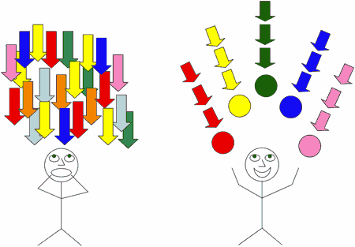

Facebook et Friendfeed tueurs de rêves
Richard Stallman, 1985, Le manifeste GNU. Hakim Bey, 1991, TAZ. John Perry Barlow, 1996, Déclaration d’indépendance du cyberspace. McKenzie Wark, 2006, A Hacker Manifesto.
Nous sommes entrées dans le monde numérique avec l’idéal de défendre l’indépendance dans l’interdépendance, l’autonomie avec la responsabilité. Que se passe-t-il aujourd’hui ? Des entrepreneurs nous vendent l’interdépendance sans l’indépendance et atomisent en même temps autonomie et responsabilité.
Un peu partout, des enthousiastes convertis à des slogans marketing affirment que le blog est mort et qu’est venu le temps des lifestreams. Plutôt que produire des contenus originaux, nous serions des machines à créer des liens entre les contenus de qualité proposés par une élite intellectuelle. Si ce projet n’est pas un retour dans le vieux monde, c’est quoi ?
« Vous autres du bas peuple discutez nos idées, faites-en la promo, liez-nous pour que les moteurs de recherche nous amènent au premier-plan. Diggez, linkez, partagez… ne soyez plus que les neurones du réseau là où jadis vous en étiez la substance même. » Durant la révolution industrielle, on est passé de l’esclavage au salariat, maigre progrès. On passe maintenant du salariat au bénévolat. Assez logique après s’être fait bercer de l’illusion de liberté pendant deux siècles.
Quand nous avons créé des blogs, les plus vigilants d’entre-nous, ont évité les plateformes propriétaires. Nous avons utilisé tous les services disponibles pour diffuser nos idées sans nous lier à aucune armada. Sur le blog, nous recollions les morceaux. Nous utilisions des services externes, nous en parlions parfois, mais nous ne construisions rien de spécifique sur ces services.
Quand je publie une vidéo sur Youtube, une photo sur Flickr, un livre sur Scridb, je reste le possesseur de ces informations. Je ne fais que les diffuser le plus largement possible. Maintenant, on nous demande tout autre chose. Sous prétexte que le temps du contenu produit par tous est mort, on nous propose d’animer notre communauté, c’est-à-dire de faire le serveur dans un bar dont nous ne verrons jamais le patron pour qu’il nous remette notre chèque à la fin du mois.
Nous courrons entre les tables, nous rangeons les chaises, faisons la plonge pour la seule gloire du service que nous croyons exploiter mais qui nous asservit en retour. Versatiles, à la première nouveauté, nous changeons de quartier, de terrasse, nous imitons les saisonniers. Parmi-nous, certains cherchent à être les premiers pour attirer l’œil des journalistes définitivement aveugles. À l’exemple de notre pape Robert Scoble, nous y gagnons quelques étoiles sans mesurer à quel point nous bafouons les idées que nous défendons par ailleurs.
À quoi bon lutter contre Hadopi et pour les libertés numériques, pour la circulation sans entrave des informations et la réinvention du droit d’auteur, si nous tombons dans l’escarcelle de ceux que nous combattons ? Les majors du disque ou du cinéma sont les mêmes que les majors d’internet. Si tu leur donnes une main, ils te prennent le bras. Si tu travailles gratis pour eux, demain ils te ramèneront à ton vieux status de larbin.
Utilisons tous les services, branchons-les les uns sur les autres, tirons-en la substance mais ne passons pas notre temps chez eux à accueillir les nouveaux clients et faire les prosélytes. Défendons notre indépendance et notre autonomie. Créons des zones d’autonomie temporaire mais pas chez eux. Vous avez vu les pirates aller voir le roi et lui demander de leur ouvrir Versailles ? Les TAZ seront chez nous et non là où ils nous diront de les construire. Elles se parleront, se féconderont, se désintègreront et se reconstruiront. Mais selon notre vouloir non pas, comme jadis, selon le vouloir des puissants qui nous enverront leurs armées pour nous faire taire.
Après l’esclavage, après le salariat, j’appelle le temps de l’indépendance dans l’interdépendance, le temps de l’autonomie responsable. Ne tombons pas une nouvelle fois dans le piège centralisateur dans le seul monde où, un temps, nous l’avions à peu près évité. Distinguons-nous de ceux qui veulent nous avaler. Individualisons-nous. Parlons-nous mais sur nos terrasses, dans nos appartements, au sommet de nos montagnes. Ne faisons l’éloge que de nous-mêmes.
Notes concrètes
- J’utilise Twitter mais j’ai développé un plugin pour rapatrier mes tweets chez moi (et je vais presque jamais sur Twitter.com). J’ai développé un autre plugin pour rapatrier les commentaires de mes billets postés sur Friendfeed. Si je passe du temps sur Friendfeed, je créerai un plugin qui récupèrera mes interventions et je me débrouillerais pour ne jamais aller sur le site (incapable d’ailleurs de rendre la simultanéité des flux de conversation des approches desktop). Je veux avoir la possibilité de transférer ces données quand je veux où je veux, dans le sens que je le veux. Je veux qu’elles m’appartiennent. Non pas qu’elles soient importantes mais pour signifier qu’elles n’appartiennent pas à Friendfeed ou à quiconque.
- Chaque mot que nous écrivons sur un service comme Facebook et Friendfeed augmente la valeur de ces services plus que de nous-mêmes.
- Ces services peuvent fermer nos comptes et détruire nos données quand ils le veulent. Facebook l’a déjà fait. Ils peuvent détruire les communautés que nous construisons si nous les dérangeons. Le cinquième pouvoir serait soit disant plus fort, serait capable de ramener la lumière… oui, à condition qu’il reste hors prise du pouvoir qu’il entend contrecarrer.
- Ces services centralisés aspirent notre présence en ligne pour la détourner des TAZ miniatures qu’étaient nos blogs. Et je ne parle même pas du cloud !
- Entre 1995 et 2000, ce fut la vague des pages persos. En même temps que la bulle explosait, les gens en eurent assez de produire du contenu gratos. On inventa le blog, une nouvelle convivialité, apogée populaire selon moi en 2006-2007 avant une nouvelle désillusion. La presse respire… même pas : les amateurs se cassent, restent les pros. Alors on invente des trucs moins exigeants, moins élitiste, Facebook, Friendfeed… des TAZ qui n’ont plus rien d’autonome.
- Si tu passes ta vie sur un service, tu lui donnes ta vie et il la marchandera au plus offrant. Si tu es contre ce monde, tu retournes dans ta TAZ. Tu ne restes pas dans la pire des dictatures qui soit, une entreprise qui n’a d’autres soucis que maximiser ses revenus. Il faut être cohérent jusqu’au bout. Critiquer un gouvernement m’apparaît inacceptable si on collabore à pire que lui.
- Nous avons bâti notre monde, tout au moins en imaginaire, en nous inspirant d’écrivains, de philosophes ou d’aventuriers. Nous devons nous réveiller, revenir à nos fondamentaux. Là, maintenant, des hommes d’affaires de tous poil ont pour seul objectif de faire fortune en détournant nos rêves. N’oubliez pas qu’ils restent prisonniers de la vieille logique de la croissance ininterrompue. Utilisez leur service mais ne leur donnez pas votre âme en dépensant chez eux votre intelligence car ils gagnent toujours plus que vous.
- Je vous renvoie à mon texte sur Panikkar. La décentralisation est la seule solution possible face à l’essentialisme, donc à l’impérialisme. La décentralisation autorise chacun de nous à se reconnaître comme un centre. Il n’existe de décentralisation que face à une démultiplication quasi infinie des centres. Aujourd’hui, une tendance inverse se développe. On nous demande de nous décentraliser. De devenir des flux dans des tuyaux, donc des esclaves des maîtres des tuyaux. C’est ce que nous avons toujours été, de la matière biologique transportable. Nous avions rêvé de changer de statut et, au nom de ce même rêve, on nous ramène à ce que nous tentions de fuir.
- Annoncer la mort du blog n’est qu’une grosse connerie. Comme jadis annoncer la mort des pages persos. Tout ça c’est la même chose, ça s’appelle le contenu sur internet, peu importe la façon dont nous le structurons. Soit tu le crées et le maintiens libre, tu es ton propre éditeur et diffuseur, soit tu te lies à un diffuseur, certes plus puissant, mais tu retombes alors dans l’ancien monde des propriétaires de tuyaux. Facebook, Friendfeed… ne sont qu’une réinventions sexy de CompuServe et d’AOL.
- Je ne nie pas leur intérêt mais au service des TAZ, pour maximiser leur autonomie. FriendFeed ou un autre outil pourrait devenir le lieu de tous les commentaires, une sorte d’interface universelle pour commenter tout. Mais à condition que ces commentaires remontent à la source et ne restent pas prisonnier d’un monde ouvert juste en théorie.
- Bug actuel. Un service qui se ferait l’interface universelle à laquelle nous aspirons monétiserait avec difficulté les données créées chez lui s’il les laissait filer. Il pourrait gagner en monétisant l’interface mais c’est du gagne petit. Le véritable trésor c’est nous, nos comportements, nos créations. Je vois mal nos requins du business s’asseoir sur le gros du gâteau. L’interface universelle ne peut qu’être en open source.